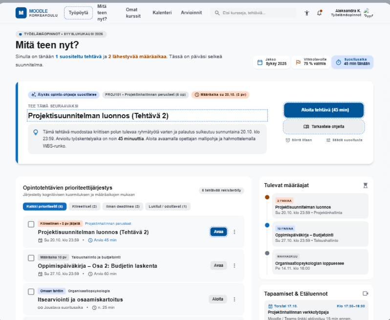

Mitä teen nyt? kokoaa opiskelijan kaikki tehtävät yhteen paikkaan
Opiskelijan arkeen kuuluu paljon kursseja, tehtäviä ja määräaikoja. Uusi Mitä teen nyt? -palvelu auttaa opiskelijaa näkemään kaikki tehtävät selkeästi yhdellä sivulla.
Kaikki tehtävät yhdestä paikasta
Mitä teen nyt?kokoaa eri kurssien tehtävät yhteen paikkaan. Näin oiskelijan ei tarvitse etsiä tehtäviä yksi kurssi kerrallaan. Helpottaa stressiä ja voi auttaa ehkäisemään unohtumisia.

Palvelussa näkyvät esimerkiksi
- kaikkien eri kurssien tehtävät
- tehtävien määräajat
- tulevat ja myöhemmin avautuvat tehtävät
- tehtävät, joilla ei ole määräaikaa
- kiireelliset tehtävät sekä etä- ja lähiopetustuntien aikataulu
Mitä teen nyt? auttaa opiskelijaa hahmottamaan paremmin, mitä täytyy seuraavaksi tehdä. Tehtävät löytyvät samasta paikasta, joten niiden etsimiseen ei kulu turhaa aikaa.
Selkeyttä opiskelijan opiskeluarkeen
Palvelun suunnittelussa on otettu huomioon opiskelijoiden tarve löytää tehtävät helposti. Selkeä näkymä auttaa hahmottamaan kurssien ja opiskelemisen kokonaisuuden. Mitä teen nyt? vähentää etsimiseen kuluvaa aikaa.
Palvelun tavoitteena on tehdä opiskelijan arjesta selkeämpää ja helpottaa tekemisen suunnittelua ja aikatauluttamista.
"Kun kaikki tehtävät löytyvät samasta paikasta, on helpompi tietää, mitä tehdä seuraavaksi."
Helpompi tapa tietää, mitä tehdä seuraavaksi
Mitä teen nyt? auttaa opiskelijaa aloittamaan tehtävien tekemisen ilman, että kaikkia kursseja ja määräaikoja täytyy tarkistaa erikseen. Opiskelu voi jatkua sulavammin. Tavoitteena on tehdä opiskelupäivästä selkeämpi ja mutkattomampi vähentäen opiskelijan kuormitusta.